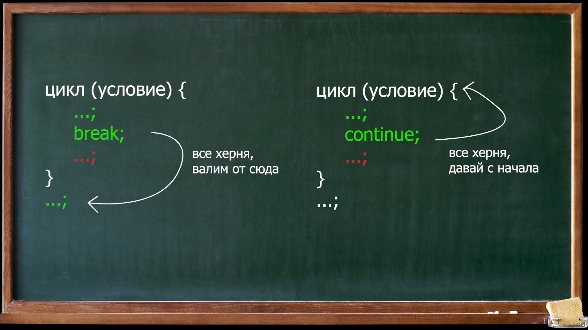
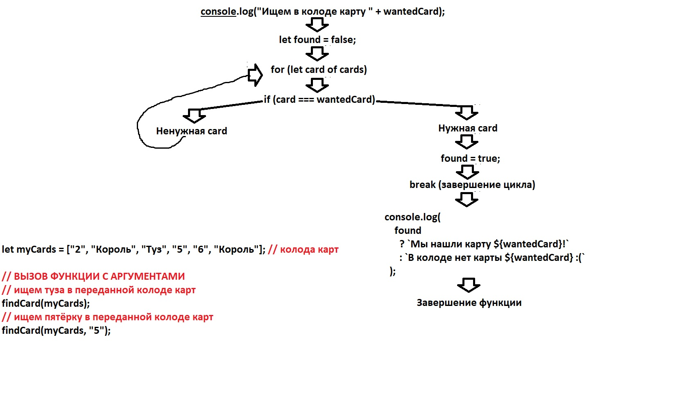

JavaScript
JavaScript — один из тех языков программирования, которые можно просто освоить без опыта. Он используется для веб-разработки, на нем можно создавать серверные приложения, 3D-игры и даже программировать робототехнику.
Типы данных
See the Pen number by Салават (@archicolt) on CodePen.
See the Pen number-2 by Салават (@archicolt) on CodePen.
Перенос строки и использование обратных кавычек
See the Pen string by Салават (@archicolt) on CodePen.
See the Pen boolean by Салават (@archicolt) on CodePen.
Преобразование в строку
See the Pen Преобразование в строку by Салават (@archicolt) on CodePen.
Преобразование в число
See the Pen JS: Преобразование в число by Салават (@archicolt) on CodePen.
Логическое преобразование
See the Pen JS: Логическое преобразование by Салават (@archicolt) on CodePen.
Операторы
Операнд - это то, к чему применяется операторы.
alert(y - x); // y и x операнды
Бинарные операторы применяются в двум операндам
+ возможно складывать как числа путём сложения чисел, так и строки с помощью объединения, к примеру “Строка” + 58 и получится Строка58
let x = 1, y = 3;
alert(y + x); // 4, бинарный минус складывает значения
Другие арифметические операторы (- / *) работают только с числами.
Унарные операторы применяются к одному операнду
+”25” – благодаря + строка преобразуется в число
+”25” + +”15” – преобразование в число имеет преимущество и происходит первым, только потом складываются числа
let x = 1;
x = -x;
alert(x); // -1, применили унарный минус
При унарном операторе строки преобразуются в числа
// Бинарный оператор
let apples = "2";
let oranges = "3";
alert(apples + oranges); // "23", так как бинарный плюс объединяет строки
// Унарный оператор
let apples = "2";
let oranges = "3";
// оба операнда предварительно преобразованы в числа
alert(+apples + +oranges); // 5
// более длинный вариант
// alert(Number(apples) + Number(oranges)); // 5
= оператор присваивания
let b = 2;
let result = 8 – (a = b + 3); к a присваивается сумма b и 3 = 5.
Потом идёт вычитание 8 – 5
Так код писать не рекомендуется из-за его низкой читабельности
Присваивание по цепочке:
let resOne = resTwo = resThree = 1 + 2: - сначала происходит сложение и результат выдаётся остальным переменным
Инкремент primer++ прибавляет 1
Декремент primer-- убавляет 1
Данные операторы можно использовать только к переменным
Постфиксная форма primer++
Префиксная форма ++primer
При постфиксной форме будет возвращён изначальный результат без прибавления 1
При префиксной форме вернёт сумма с прибавленной 1
Инкременты и декременты имеют приоритет перед другими арифметическими операторами.
let a = 10;
a++; // 11
a--; // 10
++a; // 11
--a; // 10
// постиндексной записи? сначала производится значение переменной и только потом прибавление к ней единицы
var a = 10;
console.log(a++); // вернёт 10 - консоль выводит старое значение и только потом к ней прибавляется единица
console.log(a); // вернёт 11, т.к. в предыдущем выводе единицу прибавили после вывода консоли
console.log(a--); // вернёт 11 - консоль выводит предыдущее значение и только потом вычитает единицу
console.log(a); // вернёт 10, т.к. в предыдущем выводе единицу вычли после вывода консоли
x += 5; // x = x + 5;
x -= 5; // x = x - 5;
x *= 3; // x = x * 3;
x += 5; // x = x + 5;
x /= 5; // x = x / 5;
x %= 5; // x = x % 5;
Оператор , (запятая) перечисляет несколько выражений, но результат вернётся только последнего выражения.
Оператор % - взятие остатка. Показывает остаток.
alert(5 % 2); // 1, остаток от деления 5 на 2
alert(8 % 3); // 2, остаток от деления 8 на 3
Оператор ** - возведение в степень. a**b - a умножается на себя b кол-во раз
alert(2 ** 2); // 4 (2 умножено на себя 2 раза)
alert(2 ** 3); // 8 (2 * 2 * 2, 3 раза)
alert(2 ** 4); // 16 (2 * 2 * 2 * 2, 4 раза)
// для нецелых чисел
alert(4 ** (1/2)); // 2 (степень 1/2 эквивалентна взятию квадратного корня)
alert(8 ** (1/3)); // 2 (степень 1/3 эквивалентна взятию кубического корня)
Приоритет операторов
| Приоритет | Название | Обозначение |
|---|---|---|
| ... | ... | ... |
| 15 | унарный плюс | + |
| 15 | унарный минус | - |
| 14 | возведение в степень | ** |
| 13 | умножение | * |
| 13 | деление | / |
| 12 | сложение | + |
| 12 | вычитание | - |
| ... | ... | ... |
| 2 | присваивание | = |
| ... | ... | ... |
>< больше или меньше
== равно с преобразованием в число
=== строгое сравнение без преобразования в число
'b' > 'a'
При сравнении строк JS использует алфавитный порядок
Чем дальше буква, тем больше у неё преимущество, а значит оно будет больше предыдущей буквы.
'a' > 'A'
Заглавные буквы имеют меньший вес по сравнению со строчными
'Скрипт' > 'Скрипка'
При сравнении слов будут сравниваться каждый символ в слове и у которго будет больше вес, тот, соответственно, и будет больше
'Слайдер' > 'Слайд'
Если кол-во символов разное, то будет больше та строка, символов у которой больше при предыдущих остальных
'Пример' < 'пример'
Аналогиное сравнение и заглавных и строчных букв в словах
При сравнении разных типов данных, то JS будет преобразовывать все в числа для сравнения
true == 1
false == 0
В примере ответы будут равны, потому что true - это 1, а false - это 0
Сравнение null и undefined
console.log(null === undefined); // false строгое сравнение
console.log(null == undefined); // true равны и не равны никаким другим значениям (0 == NaN) - спец правило языка
console.log("пробел1");
console.log(null > 0); // false - null преобразуется в 0
console.log(null == 0); // false
console.log(null >= 0); // true - null преобразуется в 0
console.log("пробел2");
console.log(undefined > 0); // undefined преобразуется в NaN
console.log(undefined == 0); // undefined преобразуется в NaN
console.log(undefined >= 0); // undefined преобразуется в NaN
|| оператор ИЛИ
Данный оператор не различает
false 0 ""
null/undefined - выводит их как ЛОЖЬ (false), если не нашёл истинного значения (true).
let userName = '';
let userNickName = '';
let user = userName || userNickName || "Без имени"; console.log(user); // возвращает "Без имени"
let admins = 0;
let users = 5;
admins > users || users++;
console.log(users); вернёт 6 // возвращает users = 5 + users++ (+1) путём сложения
&& оператор И
Данный оператор ищет и выводит ЛОЖЬ (false).
Если не находит ЛОЖЬ (false), то возвращает последнее значение, являющееся ИСТИНОЙ (true)
var f = 8;
if (f === 13 || f > 0 && f < 11) {//
console.log("f - число 13 или число от 1 до 10")
}
1. Проверка идёт СЛЕВА НАПРАВО. Первым проверяется f === 13. При соответствии проверка прекращается
2. В случае условие f === 13 не соответствует, то следущим по приоритету идёт оператор &&
! оператор НЕ
Данный оператор имеет наивысший приоритет над || &&
?? - оператор нулевого слияния
Возращает первый операнд, если он не определился как null или undefined.
Если первый операнд определился как null или undefined, то возвращает второй операнд даже, если второй операнд определился как null или undefined.
Приоритет логических операторов
! - наивысший приоритет
&& - занимает среднее место
|| и ?? - самый низкий приоритет среди логических операторов
Операторы if и else стоит применять, если кол-во 2-3 условия. Либо при условиях true и false
if (condition) {
// код, выполняющийся при соблюдении условия
}
if (condition) {
// код, выполняющийся при соблюдении условия
} else {
// код, выполняющийся в противном случае
}
if (condition1) {
// при первом условии
} else if (condition2) {
// при втором условии
} else if (condition3) {
// при третьем условии
} else {
// если ни одно условие не соблюдено
}
// пример с дискриминантом
let d = 10;
if (d > 0) {
// вычисляем x1, x2
} else if (d === 0) {
// вычисляем единственное значение x
} else {
// выводим сообщение об отсутствии решений
}
var login = prompt("Введите имя", ""); // 1 Запрос логина
if (login === "Админ") {
var password = prompt("Введите пароль", ""); // 2.1 Запрос пароля в случае верного логина
if (var password === "Я главный") {
alert("Здравствуйте!"); // 3.1 Приветствие, если пароль введён верно
} else if (password === "" || password === null) {
alert("Отменено"); // 3.2 Отмена в случае нажатия ESC или кнопки "Отмена"
} else {
alert("Неверный пароль"); // 3.3 В случае введения неверного пароля
}
} else if (login === "" || login === null) {
alert("Отменено"); // 2.2 Отмена в случае нажатия ESC или кнопки "Отмена"
} else {
alert("Я вас не знаю"); // 2.3 В случае введения неверного логина
}
Оператор switch следует применять при кол-ве от 3 условий
let fruit = 'Яблоко';
switch (fruit) { case 'Яблоко': console.log('Перед нами яблоко'); break; case 'Банан': console.log('Перед нами банан'); break; case 'Арбуз': case 'Вишня': case 'Клубника': console.log('Это ягода, а не фрукт'); break; default: console.log('Не знаю такого фрукта'); break; } - Безbreakвозможно объединить несколько вариантовcase- Строгая проверка на равенство===. Значенияcaseдолжны быть одного типа.
Проверка значения типа данных
typeof undefined // "undefined"
typeof 0 // "number"
typeof 10n // "biglnt"
typeof true // "boolean"
typeof "foo" // "string"
typeof Symbol("id") // "symbol"
typeof Math // "object" (1)
typeof null // "object" (2)
typeof alert // "function" (3)
typeof function(){} // "function" (4)
Проверка значения типа данных
Условный (тернарный) оператор - единственный оператор в JavaScript, принимающий три операнда: условие, за которым следует знак вопроса (?), затем выражение, которое выполняется, если условие истинно, сопровождается двоеточием (:), и, наконец, выражение, которое выполняется, если условие ложно. Он часто используется в качестве укороченного варианта условного оператора if.
var result = условие ? значение1 : значение2;Пример:var result = (age > 18) ? true : false;- рекомендуется использовать скобки в условиях
Циклы
Codepen var fibo = [1,1]; for (var i = 1; i < 9; ++i) { // кiпосле каждой итерации прибавляется 1 fibo.push(fibo[i] + fibo[i - 1]); //i- это индексы массива, значения которых складываются и прибавляются к конце } console.log(fibo); //[1,1,2,3,5,8,13,21,34,55] итого 10 чисел // 0,1,2,3,4,5,6, 7, 8, 9 - индекс исчисления ПРИНЦИП РАБОТЫ ЦИКЛА for 1) Начало: var i = 1; // выполняется один раз при входе в цикл 2) Условие: i < 9; // выполняется перед каждой итерацией цикла, если оно false, цикл остановится 3) Тело: fibo.push(fibo[i] + fibo[i - 1]); // вернёт [1,1,2]. В данном случае i - это индекс массива, т.е. первый элемент массива плюс нулевый элемент (1+1=2). // Данный код выполняется пока условие true. 4) Шаг: ++i; // 1 + 1 = 2 = i 5) Условие: i < 9; // 2 < 9; 6) Тело: fibo.push(fibo[i] + fibo[i - 1]); // вернёт [1,1,2,3]. Последнее число i = 2 после вычета шага. Значит второе число плюс первое (2+1=3) 7) Шаг: ++i; // 1 + 2 = 3 = i 8) Условие: i < 9; // 3 < 9; 9) Тело: fibo.push(fibo[i] + fibo[i - 1]); // вернёт [1,1,2,3,5]. Последнее число i = 3 после вычета шага. Значит второе число плюс первое (3+2=5)
var i = 0; for (i; i < 3; i++) { console.log(i); // закончится на 2, потому что МАХ 3 - 0 1 2 } console.log(i); // закончится на 3, потому что цикл завершён и возвращает последний результат вне цикла, который не подошёл условиям цикла (false)
Codepen for (; Math.random() >= 0.1;) console.log(fibo, "WOW");
Codepen (ВЕЧНЫЙ ЦИКЛ): for (;;) console.log("Я буду сниться тебе в кошмарах"); // (;;) ничего прописано в первой/второй/третьей частях
Codepen (ВЕЧНЫЙ ЦИКЛ): for (let i = 0;; ++i) { console.log(i); } // выводит максимальное кол-во чисел
Codepen let fruits = ['Яблоко', 'Банан', 'Апельсин', 'Ананас', 'Дыня']; // массив фруктов console.log('Сегодня я съел:'); for (let fruit of fruits) { console.log(fruit); } /* "Сегодня я съел:" "Яблоко" "Банан" "Апельсин" "Ананас" "Дыня" */
Оператор for in выделяет каждое значение отдельно из массива
Codepen let rating = ['Катя', 'Вася', 'Маша', 'Петя', 'Лена']; console.log('Рейтинг студентов:'); for (let i in rating) { console.log(`${parseInt(i) + 1} место: ${rating[i]}`); } /* "Рейтинг студентов:" "1 место: Катя" "2 место: Вася" "3 место: Маша" "4 место: Петя" "5 место: Лена" */ // parseInt преобразует строку в число. если убрать parseInt,
то будет двухзначная нумерация - 01 11 21, т.е. конкатена́ция — операция склеивания объектов линейной структуры, обычно строк..
операция + будет выбирать последующие категории
Codepen let teaVolume = 200; console.log("Вы налили себе " + teaVolume + " мл чая"); while (teaVolume > 0) { teaVolume -= 10; // снижает кол-во чая на 10 мл console.log("В чашке осталось " + teaVolume + " мл чая"); } console.log("Вы выпили весь чай");
Codepen // do-while - стоит использовать только, когда условие будет на 100% выполнено хотя бы 1 раз // для простоты примера представим, что в барабане пистолета 5 слотов и 1 патрон // вероятность выстрела - 20% // в данном цикле нет переменной do { console.log("Нажимаем на спуск"); } while (Math.random() > 0.2); // пока рандомное число больше 0.2 условие выполняется console.log("Похоже, вам не повезло");
Codepen // ВАЖНО! в continue ненужные карты отсеиваются сразу и не участвуют в цикле let cards = ["2", "Король", "Туз", "5", "6", "Король", "Дама"]; // карты в руке let hand = []; for (let card of cards) { // выполняем только для нечётного индекса if (card !== "Король" && card !== "Туз") continue; // continue отсеивает то, что соответствует условию, т.е. '5' не равно 'Король' или 'Туз' и её отсеивает. hand.push(card); console.log("Карта " + card + " добавлена в руку"); } console.log("Карты в руке", hand); // вернёт Карта Король добавлена в руку Карта Туз добавлена в руку Карта Король добавлена в руку Карты в руке (3) ['Король', 'Туз', 'Король']
Codepen // ВАЖНО! в break перечисляются все карты до тех пор, пока не попадётся нужная карта. Все карты участвуют в цикле let cards = ["2", "Король", "Туз", "5", "6", "Валет", "Дама"]; console.log("Ищем даму в колоде..."); let found = false; for (let card of cards) { console.log(`Из колоды вытянута карта ${card}`); if (card === "Дама") { found = true; break; // выход из цикла если выполняется true } } console.log(found ? "Мы нашли даму!" : "В колоде нет дам :(");
ПРИНЦИП РАБОТЫ continue и break
Codepen let i; console.log("Цикл for"); // цикл for for (i = 0; i < 11; i += 2) { // в первой части код до выполнения цикла, во второй части условие для выполнения итерации, в третьей части код после каждой итерации console.log(i); // четвёртая часть ТЕЛО ЦИКЛА } console.log("Цикл while"); // аналогичный цикл while с условием для завершения в теле цикла i = 0; while (true) { if (i > 10) break; // если i больше 10, то выходим из цикла break console.log(i); i += 2; }
Codepen // Простое повторение действий по счётчику for (let i = 0; i < 10; ++i) { console.log(i); } // Заполнение массива на основе счётчика let a = []; for (let i = 0; i < 10; ++i) { a.push(i * i); } // Заполнение массива на основе значений другого массива let b = []; for (let pow2 of a) { b.push(pow2 / 2); } // Заполнение пустого массива на основе других данных (длина массива неизвестна) let c = []; let next; white (next = file.nextLine()) { c.push(next); } // Обработка значений массива (возможно of) for (let line in c) { console.log('Длина строки:', line.length); } // Обработка индексов массива (возможно in) for (let number of c) { console.log(`Длина строки: ${number}: ${c[number].length}`); } // Обработка значений или индексов массива в обработном порядке let aReversed = []; for (let i = a.length - 1; i >= 0; --i) { aReversed.push(a[i]); } // Сложная логика выхода из цикла let currentAttempt = 0; while (currentAttempt++ < 1000) { if (crayfishwhistles()) break; } // crayfishwhistles() - какое-то сложное условие. в случае выполнения условия, то иттерация завершается // Обработка нескольких массивов одинаковой длины for (let i in a) { console.log(a[i] + aReversed[i]); } for (let i = 0; i < a.length; ++i) { console.log(a[i] + aReversed[i]); } // Цикл со счётчиком и сложной логикой изменения значения счётчиков for (let x = 0; x < 100; x += Math.round(Math.random() * 5)) { console.log(x); }
Массивы
array.prototype позволяет добавлять свойства и методы в объект Array
array.constructor ссылка на функцию, создавшую прототип объекта Array
array.length возвращает или устанавливает кол-во элементов в массиве
Пример усечения массива
array[2000];
array.length; возвращает 2001
array.length = 10;
array.length;возвращает 10
concat() новый массив, содержащий текущий массив и дополненный другними массивами и элементами every() возвращает значение true, если каждый элемент массива удовлетворяет условию, предоставляемому тестовой функцией filter() новый массив, который содержит все элементы текущего массива, удовлетворяющиие условию, предоставляемому заданной тестовой функцией forEach() выполняет заданную функцию для каждого элемента массива indexOf() индекс первого вхождения заданного значения в массиве. Если значение не обнаружено, то возвращается -1
join() объединяет все элементы массива в одну строку lastIndexOf() индекс последнего вхождения заданного значения в массиве. Если значение не обнаружено, возвращается -1 map() новый массив, полученный путём преобразования каждого элемента текущего массива с помощью заданной функции pop() удаляет последний элемент из массива push() добавляет новые элементы в конец массива
reduce() сводит два значения массива в одно, применяя к обоим заданную функцию (слева направо) reduceRight() сводит два значения массива в одно, применяя к обоим заданную функцию (справа налево) reverse() обращает порядок следования элементов в массиве в обратный порядок shift() удаляет первый элемент из массива и возвращает его, изменяя длину массива slice() выбирает часть массива и возвращает его в виде нового массива
some() возвращает значение true, если один или несколько элементов массива удовлетворяет условию, предоставляемому тестовой функцией sort() возвращает отсортированный массив (по умолчанию сортировка выполняется в алфавитном порядке и в порядке возрастания splice() возвращает новый масив, состоящий из элементов, которые были добавлены или удалены из данного массива toString() преобразует массив в строку unShift() возвращает новый массив другой длины, к которому добавлены один или несколько элементов
Примеры применения методов: arr.push(...items) – добавляет элементы в конец, arr.pop() – извлекает элемент из конца, arr.shift() – извлекает элемент из начала, arr.unshift(...items) – добавляет элементы в начало.
let arr = ["I", "go", "home"]; delete arr[1]; // удалит "go", но оставит пустое место''со значениемundefinedconsole.log(arr); // вернёт["I",,"home"]console.log(arr.length); // вернёт3console.log(arr[1]); // вернётundefinedМетодspliceудаляет пустое место arr.splice(1, 1); // начиная с позиции 1 удаляет 1 элемент console.log(arr); // вернёт["I","home"]Так что можно без delete обойтись
Функции
alert
Функция alert выводит результат кода, который был указан для вывода, в виде модального окна.
При этом интерфейс остальной части страницы блокируется пока модальное окно не будет закрыто.
var a = "Hello";
alert(a);
Данная функция показывает сообщение и ждёт, пока пользователь нажмёт кнопку «ОК».
prompt
Модальное окно с полем для ввода
let puck = prompt("Test", ''); // для IE
let puck = prompt("Сколько тебе лет?", [] или "" или "100");
alert(`Тебе ${puck} лет!`); // Тебе 100 лет!
confim
Модальное окно с вопросом и вариантами ответа
let isBoss = confirm("Ты здесь главный?");
alert(isBoss); // true, если нажата OK
Функции parseInt и parseFloat применяются к числам.
parseInt() - отбрасывает дробные части и выводит только целое число
const john = parseInt(10.333);
console.log(john); // 10
parseFloat() - возвращает число каким оно должно быть. Целое - целым, дробное - дробным.
const john = parseFloat(10.333);
console.log(john); // 10.333
Данные функции применяются для строк
charAt() возвращает символ, находящийся в указанной позиции в строке. Обратите внимание на то, что отсчёт позиций начинается с 0.
const string = "Javascript";
console.log(string.charAt(3)); // возвращает "a"
concat() - присоединяет к строке одну или несколько строк и возвращает объединённую строку.
const string = "Javascript";
console.log(string.concat(" - это круто!!!")); // возвращает "Javascript - это круто!!!"
indexOf() - выполняет поиск первого вхождения символа или подстроки в данной строке и возвращает номер соответствующей позиции.
const string = "Javascript - это здорово!";
console.log(string.indexOf("здорово")); // возвращает 17, т.к. буква "з" на 17 позиции
split() - разбивает строку на массив подстрок.
const string = "Javascript - это здорово!";
console.log(string.split("з")); // возвращает ["Javascript - это ", "дорово!"]
substr() - извлекает часть строки, начиная с указанной позиции, и возвращает указанное кол-во символов.
const string = "Javascript";
console.log(string.substr(2,5)); // возвращает "vascr"
substring() - извлекает символы строки, заключённые между указанными позициями (символ, соответствующий концу диапазона, в результат не включается).
const string = "Javascript";
console.log(string.substring(2,5)); // возвращает "vas"
toLowerCase() - переводит указанные символы строки в нижний регистр.
const string = "Javascript";
console.log(string.toLowerCase()); // возвращает "javascript"
toUpperCase() - переводит указанные символы строки в верхний регистр.
const string = "Javascript";
console.log(string.toUpperCase()); // возвращает "JAVASCRIPT"
Функция – это значение, представляющее «действие»
Обычные значения, такие как строки или числа представляют собой данные.
Функции, с другой стороны, можно воспринимать как действия.
Мы можем передавать их из переменной в переменную и запускать, когда захотим.
Саму функцию можно вызвать до её объявления
printWeekday(); // вызов функции до её объявления
function printWeekday() {
var dayIndex = new Date().getDay();
var days = [
'воскресенье',
'понедельник',
'вторник',
'среда',
'четверг',
'пятница',
'суббота',
];
console.log(`Сегодня ${days[dayIndex]}`);
}
Самовыполняющиеся анонимная функция функция
Чтобы сделать самовыполняющуюся функцию - необходимо функцию добавить в круглые скобки и в конце пару пустых круглых скобок добавить.
Анонимная функция - это функция без имени и без переменной
(function() {
...
})();
var myVariable = "Я нахожусь вне функции.";(function() {
var myVariable = "Я нахожусь в этой анонимной функции";
console.log(myVariable);
})();
console.log(myVariable);
Возведение в степень без объекта Math.pow
function pow(x, n) {
let result = x;
for (let i = 1; i < n; i++) { // проверяет i больше или равно n
result *= x; // умножает на само себя
}
return result;
}
let x = prompt("x?", ''); // какое число x?
let n = prompt("n?", ''); // какое число n?
if (n < 1) {
alert(`Степень ${n} не поддерживается, используйте натуральное число`);
} else {
alert( pow(x, n) );
}
Function Expression: функция, созданная внутри другого выражения или синтаксической конструкции.
В данном случае функция создаётся в правой части «выражения присваивания» =:
function sayHi() { // (1) создаём
alert( "Привет" );
}
let func = sayHi; // (2) копируем - sayHi БЕЗ КРУГЛЫХ СКОБОК, ИНАЧЕ ОШИБКУ ВЫДАСТ ПРИ ВЫЗОВЕ func();
func(); // Привет // (3) вызываем копию (работает)!
sayHi(); // Привет
С помощью переменной
let sayHi = function() { // (1) создаём
alert( "Привет" );
}; // ТОЧКА С ЗАПЯТОЙ ОБЯЗАТЕЛЬНА В ДАННОМ СЛУЧАЕ
let func = sayHi; // (2) копируем - sayHi БЕЗ КРУГЛЫХ СКОБОК, ИНАЧЕ ОШИБКУ ВЫДАСТ ПРИ ВЫЗОВЕ func();
func(); // Привет // (3) вызываем копию (работает)!
sayHi(); // Привет
Функцию, указанную значением переменной, можно вызвать только после объявления переменной
var primerName = function() {
var dayIndex = new Date().getDay();
var days = [
'воскресенье',
'понедельник',
'вторник',
'среда',
'четверг',
'пятница',
'суббота',
];
console.log(`Сегодня ${days[dayIndex]}`);
};
primerName(); // вызов функции после объявления переменной в которой функция является значением
ВАЖНО: примитивные (элементарные) типы данных для аргументов: number, string, boolean, undefined, null
function ИМЯ ФУНКЦИИ(ПАРАМЕТР, ПАРАМЕТР) {
ИНСТРУКЦИЯ ФУНКЦИИ
}
ИМЯ ФУНКЦИИ(АРГУМЕНТ, АРГУМЕНТ);
ПРИМЕНЕНИЕ ОБЪЕКТА arguments В ФУКНЦИИ С ПРЕВЫШЕНИЕМ КОЛ-ВО АРГУМЕНТОВ НАД КОЛ-ВОМ ПАРАМЕТРОВ
ВЫДАСТ ПОСЛЕДНИЙ АРГУМЕНТ ПРИ ПРЕВЫШЕНИИ КОЛ-ВА АРГУМЕНТОВ НАД ПАРАМЕТРАМИ
function flexMobile() {
var welcome = 'Добро пожаловать, ';
for (i = 0; i < arguments.length; i++) {
welcome = welcome + arguments[i] + '';
}
return welcome;
}
console.log(flexMobile(("Christopher", "James", "Phoenix", "Minnick") + "<br>"));
"Добро пожаловать, Minnick<br>"
console.log(flexMobile(("Eva", "Ann", "Holland") + "<br>"));
"Добро пожаловать, Holland<br>"
Функция с 2-мя аргументами
// при этом второй аргумент имеет значение по умолчанию
function findCard(cards, wantedCard = "Туз") { // cards и wantedCard со значением - это ПАРАМЕТРЫ
console.log("Ищем в колоде карту " + wantedCard);
let found = false;
for (let card of cards) {
console.log(`Из колоды вытянута карта ${card}`);
if (card === wantedCard) {
found = true;
break;
}
}
console.log(
found
? `Мы нашли карту ${wantedCard}!`
: `В колоде нет карты ${wantedCard} :(`
);
}
let myCards = ["2", "Король", "Туз", "5", "6", "Король"];
// ищем туза в переданной колоде карт
findCard(myCards);
// ищем пятёрку в переданной колоде карт
findCard(myCards, "5"); // myCards и "5" - это АРГУМЕНТЫ
/*
Вернёт:
"Ищем в колоде карту Туз"
"Из колоды вытянута карта 2"
"Из колоды вытянута карта Король"
"Из колоды вытянута карта Туз"
"Мы нашли карту Туз!"
"Ищем в колоде карту 5"
"Из колоды вытянута карта 2"
"Из колоды вытянута карта Король"
"Из колоды вытянута карта Туз"
"Из колоды вытянута карта 5"
"Мы нашли карту 5!"
*/
ПОСЛЕ ТОГО, КАК НАШЁЛСЯ "ТУЗ" ФУНКИЦЯ ЗАПУСКАЕТСЯ СНОВА И ИЩЕТ "5"
Пример работы функции
Функции "колбэки" - это функции, которые объявляются в качестве аргументов для другой функции.
function ask(question, yes, no) {
if (confirm(question)) yes()
else no();
}
function showOk() {
alert( "Вы согласны." );
}
function showCancel() {
alert( "Вы отменили выполнение." );
}
// использование: функции showOk, showCancel передаются в качестве аргументов ask
ask("Вы согласны?", showOk, showCancel);
Директива return может находиться в любом месте тела функции. Как только выполнение доходит до этого места, функция останавливается, и значение возвращается в вызвавший её код (присваивается переменной result выше).
function sum(a, b) {
return a + b;
}
let result = sum(1, 2);
alert(result); // 3
ВАЖНО! return и его значение НЕОБХОДИМО писать в одну строку, либо значение прописать в круглых скобках и разместить в несколько строк,
иначе return будет пустым, что равняется undefined.
return 1
Codepen
function findCardIndex(cards, wantedCard = "Туз") {
console.log("Ищем в колоде карту " + wantedCard);
let foundIndex = -1;
for (let index in cards) {
let card = cards[index];
console.log(`Из колоды вытянута карта ${card}`);
if (card === wantedCard) {
foundIndex = index;
break;
}
}
// ВАРИАНТ №1
console.log(
foundIndex > -1
? `Мы нашли карту ${wantedCard}!`
: `В колоде нет карты ${wantedCard} :(`
);
/*
ВАРИАНТ №2
if (foundIndex > -1) {
console.log(`Мы нашли карту ${wantedCard}!`);
} else {
console.log(`В колоде нет карты ${wantedCard} :(`);
}
*/
return foundIndex;
}
let myCards = ["2", "Король", "7", "Туз", "5", "6", "Дама"];
let aceIndex = findCardIndex(myCards);
let jackIndex = findCardIndex(myCards, "Валет");
console.log(aceIndex + " - показывает кол-во перебранных карт");
console.log(jackIndex);
"Ищем в колоде карту Туз"
"Из колоды вытянута карта 2"
"Из колоды вытянута карта Король"
"Из колоды вытянута карта 7"
"Из колоды вытянута карта Туз"
"Мы нашли карту Туз!"
"Ищем в колоде карту Валет"
"Из колоды вытянута карта 2"
"Из колоды вытянута карта Король"
"Из колоды вытянута карта 7"
"Из колоды вытянута карта Туз"
"Из колоды вытянута карта 5"
"Из колоды вытянута карта 6"
"Из колоды вытянута карта Дама"
"В колоде нет карты Валет :("
"3 - показывает кол-во перебранных карт"
-1
return 2
Codepen
function findCardIndex(cards, wantedCard = "Туз") {
console.log("Ищем в колоде карту " + wantedCard);
for (let index in cards) {
let card = cards[index];
console.log(`Из колоды вытянута карта ${card}`);
if (card === wantedCard) {
console.log(`Мы нашли карту ${wantedCard}!`);
return index;
}
}
console.log(`В колоде нет карты ${wantedCard} :(`);
return -1;
}
let myCards = ["2", "Король", "7", "Туз", "5", "6", "Дама"];
findCardIndex(myCards);
findCardIndex(myCards, "Валет");
"Ищем в колоде карту Туз"
"Из колоды вытянута карта 2"
"Из колоды вытянута карта Король"
"Из колоды вытянута карта 7"
"Из колоды вытянута карта Туз"
"Мы нашли карту Туз!"
"Ищем в колоде карту Валет"
"Из колоды вытянута карта 2"
"Из колоды вытянута карта Король"
"Из колоды вытянута карта 7"
"Из колоды вытянута карта Туз"
"Из колоды вытянута карта 5"
"Из колоды вытянута карта 6"
"Из колоды вытянута карта Дама"
"В колоде нет карты Валет :("
return 3
Codepen
function checkAge(age) {
console.log(`Вам ${age} лет`);
if (age >= 18) return;
console.log("Школота!");
console.log(`Потерпи ещё ${18 - age} лет до совершеннолетия`);
}
// все сообщения будут выведены
checkAge(2);
// функция перестанет выполняться после первого сообщения
checkAge(23);
checkAge(18);
"Вам 2 лет"
"Школота!"
"Потерпи ещё 16 лет до совершеннолетия"
"Вам 23 лет"
"Вам 18 лет"
return 4 and undefined
Codepen
function doNothing() {
console.log("Я ничего не делаю!");
}
console.log(doNothing()); // undefined
let x = doNothing();
console.log(x); // undefined
let y;
console.log(y);
"Я ничего не делаю!"
undefined
"Я ничего не делаю!"
undefined
undefined
Обычное применение стрелочной функции
let sum = (a, b) => a + b;
/* Эта стрелочная функция представляет собой более короткую форму:
let sum = function(a, b) {
return a + b;
};
*/
alert( sum(1, 2) ); // 3
Применение стрелочной функции как и Function Expression (функционального выражения)
Первый вариант
let age = prompt("Сколько Вам лет?", 18);
let welcome = (age < 18) ?
() => alert('Привет!') :
() => alert("Здравствуйте!");
welcome();
Второй вариант
// Function Expression (функционального выражения)
function ask(question, yes, no) {
if (confirm(question)) yes()
else no();
}
ask(
"Вы согласны?",
function() { alert("Вы согласились."); },
function() { alert("Вы отменили выполнение."); }
);
// Стрелочная функция
function ask(question, yes, no) {
if (confirm(question)) yes()
else no();
}
ask(
"Вы согласны?",
() => alert("Вы согласились."),
() => alert("Вы отменили выполнение.")
);
showMessage(..) // показывает сообщение
getAge(..) // возвращает возраст (получая его каким-то образом)
calcSum(..) // вычисляет сумму и возвращает результат
createForm(..) // создаёт форму (и обычно возвращает её)
checkPermission(..) // проверяет доступ, возвращая true/false
Объекты
Объект Math является встроенным объектом, хранящим в своих свойствах и методах различные математические константы и функции.
Объект Math не является функциональным объектом.
Math не работает с числами типа BigInt.
See the Pen 2.5JS-функции Math by Салават (@archicolt) on CodePen.
Практика сравнения чисел и Math
See the Pen 2.7JS-Практика сравнения чисел и Math by Салават (@archicolt) on CodePen.
Создание object
let userInfo = new Object();
let user = {};
ВАЖНО! Свойства объекта возможно назвать зарезервированными именами, к примеру: for или in.
1 Простой вывод свойств
ОБЫЧНЫЕ ИМЕНА СВОЙСТВvar = { name: "John",// обычное имя свойства surname: "Smith",// обычное имя свойства age: 33,// обычное имя свойства }; console.log(userInfo); // выведет весь объект console.log(userInfo.name); // "John" console.log(userInfo["age"]); // 33ДЛИННЫЕ ИМЕНА СВОЙСТВvar = { "likes javascript": true,// имя из нескольких слов пишется в кавычках } console.log(bigName["likes javascript"]); // true - вывод в квадратных скобках с кавычкамиЧИСЛОВЫЕ ИМЕНА СВОЙСТВvar = { 999: "Значение свойства",// имя-число как обычное имя прописывается }; console.log(digit[999]); // "Значение свойства" - вывод в квадратных скобках можно без кавычекИМЕНА ПЕРЕМЕННЫХ ДЛЯ СВОЙСТВvar = "Некое значение"; var = "surname"; var = { [black]: false,// имя внешней переменной прописывается в квадратных скобках } console.log(blackKey[black]); // false - вывод в квадратных скобках console.log(userInfo[key]); // "Smith" передача с помощью квадратных скобок
2 Вывод свойств с помощью function()
function {
console.log();
}
var = {
name: "Alexey",
surname: "Petrov",
address: {
city: "New York",
street: "Fivestreets",
}
};
myTypes(me, "name");
myTypes(me, "surname");
myTypes(me, "address");
console.log(me.address.city);
3 Вывод свойств с помощью function()
function {
return {
name: ,
age: ,
// ...другие свойства
};
}
let = makeUserInfo("John", 30);
console.log(user);
/*
УПРОЩЁННАЯ ВЕРСИЯ
function makeUserInfo(name, age) {
return {
name, // Тоже самое, что и name: name,
age, // Тоже самое, что и age: age,
"likes javascript": true,
//...другие свойства
};
}
*/
Добавление свойства
// БЕЗ ДОБАВЛЕНИЙ
const userInfo = {
name: "John"
};
console.log(userInfo);
{
name: 'John',
}
// ПЕРВОЕ ДОБАВЛЕНИЕ
userInfo.age = 30;// Добавление свойства
console.log(userInfo);
{
name: 'John',
age: 30,
}
// ВТОРОЕ ДОБАВЛЕНИЕ
userInfo["likes javascript"] = true;// Добавление свойства
console.log(userInfo);
{
name: 'John',
age: 30,
likes javascript: true,
}
// ТРЕТЬЕ ДОБАВЛЕНИЕ
userInfo.address = {// Добавление свойства
city: "Uzhhorod",
street: "Freedom"
};
console.log(userInfo);
{
name: 'John',
age: 30,
likes javascript: true,
address: {
city: 'Uzhhorod',
street: 'Freedom',
}
}
Изменение свойства
const userInfo = {
name: "John",
age: 30
};
console.log(userInfo);
{
name: 'John',
age: 30,
}
userInfo.age = 18;// Изменение свойства
console.log(userInfo);
{
name: 'John',
age: 18,
}
Удаление свойства
const userInfo = {
name: "John",
age: 30,
"likes javascript": true
};
console.log(userInfo);
{
name: 'John',
age: 30,
likes javascript: true,
}
// ПЕРВОЕ УДАЛЕНИЕ
delete userInfo.age;// Удаление свойства
console.log(userInfo);
{
name: 'John',
likes javascript: true,
}
// ВТОРОЕ УДАЛЕНИЕ
delete userInfo["likes javascript"];// Удаление свойства
console.log(userInfo);
{
name: 'John',
}
Копирование свойства
// При копировании объекта в другую переменную
// Сам объект не копируется, а копируется только ссылка на него
let user = {
name: "John",
age: 30
};
console.log(user);
{
name: 'John',
age: 30,
}
let admin = user;// Копирование объекта
console.log(user);
{
name: 'John',
age: 30,
}
admin.age = 18;// Изменение свойства объекта через новое имя переменной
console.log(user);// Даже при вызове объекта с изначальным именем всё равно выведет все изменения свойств
{
name: 'John',
age: 18,
}
ВАЖНО!!! НЕ ПУТАТЬ
При изменении admin.age = 18; - изменится общая ссылка.
А таким способом admin = {age: 18,} - свойство изменится только в admin, т.к. это объект с новыми свойствами.
let userInfo = {
name: "John",
age: 30,
address: {
city: "Uzhhorod",
street: "Freedom",
},
};
console.log(userInfo);
{
name: 'John',
age: 30,
address: {
city: 'Uzhhorod',
street: 'Freedom',
},
};
console.log(userInfo.address);
{
city: 'Uzhhorod',
street: 'Freedom',
},
console.log(userInfo.address.city);
'Uzhhorod'
let id = Symbol("id"); // создание символа id с описанием (именем) 'id'
let userInfo = {
name: "John",
age: 30,
[id]: "Некое значение" // будет присутствовать, но не будет выводиться
};
console.log(userInfo);
{
name: 'John',
age: 30,
}
/*
Основное применение символов:
1 "Скрытые" свойства объектов
Символьное свойство не появится в for..in
2 Использование системных символов
Symbol.iterator, Symbol.toPrimitive и т.д.
*/
Большинство типов данных в JavaScript могут быть неявно преобразованы в строку. Например, функция alert принимает практически любое значение, автоматически преобразовывает его в строку, а затем выводит это значение, не сообщая об ошибке. Символы же особенные и не
преобразуются автоматически.
К примеру, alert ниже выдаст ошибку:
let id = Symbol("id");
alert(id); // TypeError: Cannot convert a Symbol value to a string
Преобразование в строку.
let id = Symbol("id");
alert(id.toString()); // метод .toString() преобразует в строку и вернёт Symbol(id)
Выведение описания.
let id = Symbol("id");
alert(id.description); // метод .description вернёт только описание id
Дублирование объекта
Object.assign - создаёт клон объекта.
Object.assign(clone, obj1, obj2, obj3); // clone - целевой объект, objN - объекты клонирования
var obj1 = { name: "John" };
var obj2 = { surname: 'Smith' };
var obj3 = { age: 30 };
var clone = { gender: 'men' };
Object.assign(clone, obj1, obj2, obj3);
console.log(clone);
{
'gender': 'men',
'name': 'John',
'surname': 'Smith',
'age': 30,
}
!Обязательно указать целевой объект даже без имени!
Если целевой объект без имени Object.assign() должен находиться значением переменной.
var primer = Object.assing({}, obj1, obj2, obj3,);
!Если скопированное имя свойства уже существует, то оно будет перезаписано.
!С помощью Object.assign нельзя склонировать объект внутри объекта user.size.height.
Для этого необходимо использовать глубокое клонирование: _.cloneDeep(obj).
// Синтаксис
// Object.assign(целевой объект{}, {свойство: значение,}, ...);
let userInfo = {
name: "John",
age: 30
};
console.log(userInfo);
{
name: 'John',
age: 30,
}
let user = Object.assign({}, userInfo);
user.age = 18;
console.log(user);
{
name: 'John',
age: 18,
}
Добавление свойств объекту с помощью object.assign
let userInfo = {
name: "John",
age: 30
};
Object.assign(userInfo, { ["likes javascript"]: true, city: "Uzhhorod" });
console.log(userInfo);
{
name: 'John',
age: 30,
likes javascript: true,
city: 'Uzhhorod',
}
Данный способ даёт возможность не прибегать к object.assign
let user = {
name: "John",
age: 30
};
let clone = {}; // новый пустой объект
// давайте скопируем все свойства user в него
for (let key in user) {
clone[key] = user[key];
}
i// теперь clone это полностью независимый объект с тем же содержимым
clone.name = "Pete"; // изменим в нём данные
console.log( user.name ); // все ещё John в первоначальном объекте
Обычная проверка
let userInfo = new Object();
userInfo.name = "John";
//userInfo.age = 30;
//console.log(userInfo.age);
if (userInfo.age) {
console.log(userInfo.age);
}
Провека: опциональная цепочка ?.
Как мы видим, все они просты и понятны в использовании. ?. проверяет левую часть на null/undefined и позволяет продолжить вычисление, если это не так.
Цепочка ?. позволяет безопасно получать доступ к вложенным свойствам.
let userInfo = new Object();
userInfo.name = "John";
userInfo.age = 30;
/*userInfo.address = {
city: "Uzhhorod",
street: "Freedom"
};*/
//console.log(userInfo.address.street); // выведет ошибку, если нет данного свойства
console.log(userInfo?.address?.street); // данный способ при проверке выводит undefined, если отсутствует свойство
Проверка через оператор in
var userInfo = new Object();
userInfo.name = "John";
userInfo.age = 30;
userInfo.address = {
city: "Uzhhorod",
street: "Freedom"
};
if ("name" in userInfo) {
console.log(userInfo.name);
}
"John"
// ИНФОРМАЦИЯ
//В большинстве случаев сработает сравнение с undefined
//либо опциональная цепочка ?.
//Но есть особый случай, когда свойство существует
//но содержит значение undefined
//В этом случае необходимо использовать "in".
var user = new Object();
user.name = undefined;
// ...следующие свойства
//код не сработает и выдаст false
/*if (user.name) {
console.log(user.name);
}*/
//код сработает и выдаст true (undefined)
if ("name" in user) {
console.log(user.name);
}
// Для перебора всех свойств объекта используется цикл for..in.
// Этот цикл отличется от изученного ранее цикла for(;;).
/*
for (let key in object) {
тело цикла выполняется для каждого свойства объекта
}
// key (переменная) ключи свойств объекта
*/
var userInfo = new Object();
userInfo.name = "John";
userInfo.age = 30;
userInfo.address = {
city: "Uzhhorod",
street: "Freedom"
};
for (var key in userInfo) {
// ключи
console.log(key);
'name'
'age'
'address'
// значения ключей
console.log(userInfo[key]);
'John'
'30'
'Object'
}
for (var key in userInfo.address) {
// ключи
console.log(key);
city,
street
// значения ключей
console.log(userInfo.address[key]);
Uzhhorod,
Freedom
}
Метод - это свойство значением которого является функция.
var userInfo = {
name: "John",
age: 30,
address: {
city: "Uzhhorod",
street: "Freedom"
}
/*
// showInfo - метод
showInfo: function () {
console.log(
`${userInfo.name}, ${userInfo.age} лет. Адрес: г.${userInfo.address.city}, ул.${userInfo.address.street}`
);
}*/,
// короткая запись
showInfo() {
console.log(
`${userInfo.name}, ${userInfo.age} лет. Адрес: г.${userInfo.address.city}, ул.${userInfo.address.street}`
);
}
};
userInfo.showInfo();
"John, 30 лет. Адрес: г.Uzhhorod, ул.Freedom"
var sandwich = {
meat: "",
cheese: "",
bread: "",
condiment: "",
makeSandwich: function (meat, cheese, bread, condiment) { // параметры
this.meat = meat;
this.cheese = cheese;
this.bread = bread;
this.condiment = condiment;
var mySandwich =
this.bread + ", " +
this.meat + ", " +
this.cheese + ", " +
this.condiment;
return mySandwich;
}
};
var sandwichOrder = sandwich.makeSandwich("ham", "cheddar", "wheat", "spicy mustard"); // аргументы
console.log(sandwichOrder);
"wheat, ham, cheddar, spicy mustard"
Функцию, которая является свойством объекта, называют методом этого объекта.
let user = {
name: "John",
age: 30
};
user.sayHi = function() { // функция вне объекта, поэтому необходимо прописать имя объекта
alert("Привет!");
};
user.sayHi(); // Привет!
Возможно вначале объявить функцию, потом присвоить функцию как свойство объекту.
Здесь используется ключевое слово this, чтобы сработал код.
let user = { name: "John" };
let admin = { name: "Admin" };
// вначале объявляем функцию
function sayHi() {
alert( this.name );
}
// используем одну и ту же функцию в двух объектах
user.f = sayHi;
admin.f = sayHi;
// эти вызовы имеют разное значение this
// "this" внутри функции - это объект "перед точкой"
user.f(); // John (this == user)
admin.f(); // Admin (this == admin)
admin['f'](); // Admin (нет разницы между использованием точки или квадратных скобок для доступа к объекту)
Правило простое: если вызывается obj.f(), то во время вызова f, this – это obj. Так что, в приведённом выше примере это либо user, либо admin.
Методы объекта, this
Источник на аналогичный вариант
var userInfo = {
name: "John",
age: 30,
address: {
city: "Uzhhorod",
street: "Freedom"
},
// короткая запись
showInfo() {
console.log(
`${this.name}, ${this.age} лет. Адрес: г.${this.address.city}, ул.${this.address.street}`
);
}
};
userInfo.showInfo();
"John, 30 лет. Адрес: г.Uzhhorod, ул.Freedom"
Методы объекта, this (стрелочная функция)
var userInfo = {
name: "John",
age: 30,
address: {
city: "Uzhhorod",
street: "Freedom"
},
// короткая запись
showInfo() {
// данной функции this Обращается к showInfo, у которой нет свойств (ключей) и поэтому выведет ошибку
/*function show() {
console.log(
`${this.name}, ${this.age} лет. Адрес: г.${this.address.city}, ул.${this.address.street}`
);
}*/
// У стрелочной функции нет своего 'this'
// используются значение из внешнего метода userInfo.showInfo()
var show = () =>
console.log(
`${this.name}, ${this.age} лет. Адрес: г.${this.address.city}, ул.${this.address.street}`
);
show();
}
};
userInfo.showInfo();
"John, 30 лет. Адрес: г.Uzhhorod, ул.Freedom"
Методы объекта, this (преимущество)
var userInfo = {
name: "John",
age: 30,
address: {
city: "Uzhhorod",
street: "Freedom"
},
// короткая запись
showInfo() {
// если использовать this,
// то метод showInfo возможно запустить другим именем объекта (переменной)
console.log(
`${this.name}, ${this.age} лет. Адрес: г.${this.address.city}, ул.${this.address.street}`
);
"John, 30 лет. Адрес: г.Uzhhorod, ул.Freedom"
// если использовать имя объекта (переменной) userInfo,
// то при вызове метода showInfo другим именем выдаст ошибку
// console.log(`${userInfo.name}, ${userInfo.age} лет. Адрес: г.${userInfo.address.city}, ул.${userInfo.address.street}`);
}
};
userInfo.showInfo();
var user = userInfo;
userInfo = null; // объект обнулён
user.showInfo(); // из-за обнуления объекта данный вызов метода выдаст ошибку, если в методе вместо this использовать имя объекта (переменной)
"John, 30 лет. Адрес: г.Uzhhorod, ул.Freedom"
function sayHi() {
alert(this);
}
sayHi(); // undefined при "use strict"
var calc = {
read() {
this.num1 = +prompt("num1?", 0);
this.num2 = +prompt("num2?", 0);
},
sum() {
return this.num1 + this.num2;
},
mul() {
return this.num1 * this.num2;
}
};
calc.read();
console.log(calc.sum()); // выведет сумму введённых чисел
console.log(calc.mul()); // выведет произведение введённых чисел
Калькулятор с помощью конструктора
function Calculator() {
this.read = function() {
this.a = +prompt('a?', 0);
this.b = +prompt('b?', 0);
};
this.sum = function() {
return this.a + this.b;
};
this.mul = function() {
return this.a * this.b;
};
}
let calculator = new Calculator();
calculator.read();
console.log( "Sum=" + calculator.sum() );
console.log( "Mul=" + calculator.mul() );
let ladder = {
step: 0,
up() {
this.step++;
return this;
},
down() {
this.step--;
return this;
},
showStep() {
console.log( this.step );
return this;
}
};
ladder.up().up().down().showStep().down().showStep(); // показывает 1 затем 0
// Данный способ построения цепочки возможен благодаря return this;
// ВМЕСТО
/*
ladder.up();
ladder.up();
ladder.down();
ladder.showStep(); // 1
ladder.down();
ladder.showStep(); // 0
*/
Свойство value представляет собой сумму всех введённых пользователем значений, с учётом начального значения startingValue.
function Accumulator(startingValue) {
this.value = startingValue;
this.read = function() {
this.value += +prompt('Сколько нужно добавить?', 0);
};
}
let accumulator = new Accumulator(1);
accumulator.read(); // прибавляет введённое пользователем значение к текущему значению
accumulator.read(); // прибавляет введённое пользователем значение к текущему значению
console.log(accumulator.value);
Обычный синтаксис создания объекта{... } позволяет создать только один объект.
Но зачастую нам нужно создать множество однотипных объектов, таких как пользователи, элементы меню и т.д.
Это можно сделать при помощи функции - конструктора и оператора 'new'.
Источник аналогичного примера
/*
Функции - конструкторы являются обычными функциями.
Но есть два правила:
1 Имя функции - конструктора должно начитаться с большой буквы.
2 Функция - конструктор должна вызываться при помощи оператора 'new'.
*/
function User(name, age) {
//this = {}; автоматически создаётся пустой объект (неявно)
this.name = name;
this.age = age;
// return this; автоматически возвращается объект (неявно) происходит
}
console.log(new User("John", '45')); // при вызове функции-конструктора необходимо указать оператор new для обозначения объекта
Когда функция вызывается как new User(...), происходит следующее:
1. Создаётся новый пустой объект, и он присваивается this.
2. Выполняется тело функции. Обычно оно модифицирует this, добавляя туда новые свойства.
3. Возвращается значение this.
{
'name': 'John',
'age': '45'
}
console.log(new User("Kate", 72));
{
'name': 'Kate',
'age': 72
}
function User(name) {
this.name = name;
this.sayHi = function() {
console.log( "Меня зовут: " + this.name );
};
}
let john = new User("John");
john.sayHi(); // Меня зовут: John
/*
john = {
name: "John",
sayHi: function() { ... }
}
*/
Справочник JavaScript
Способ поиска
document.querySelector('.hero-list__descr') - метод поиска по селекторам CSS
Стилизация через JS
document.querySelector('.hero-list__descr').style.color = 'red'; - назначение стиля.
Срабатывает один раз на первом элементе, который был найден с классом. hero-list__descr
Данный способ является более приоритетным по сравнению со стилизацией в CSS.
Сокращёние кода для его повторного использования
let descr = document.querySelector('.hero-list__descr'); - создание переменной
descr.style.color = 'red'; - использование переменной для стилизации.
Данный способ улучшает читабельность кода и снижает нагрузку на систему, потому что запускает файл document.querySelector один раз
Автоматическая повторная стилизация
document.querySelectorAll('.hero-list__title').forEach(function(element) {
element.style.color = 'green';
});
querySelectorAll() - выбор всех элементов названием, классом или id
.forEach() - выполняет указанную функцию внутри один раз для каждого элемента в массиве
function(element) {} - функция с предметом внутри на который надо воздействовать
Присвоение класса блоку в JS и его смещение
let block = document.querySelector('.item-primer__child'); - создание переменной
block.classList.add('block-translate'); - присвоение класса блоку
add - добавляет
remove - удаляет
HTML
<div class="parent">
<div class="child">
<p class="child__descr">
Смещение по горизонтали на 50px
</p>
</div>
</div>
CSS
.parent {
width: 200px;
height: 100px;
background-color: powderblue;
}
.child {
width: 100px;
height: 100px;
background-color: tomato;
}
.block-translate {
transform: translateX(50px);
}
JS
var block = document.querySelector('.child');
block.classList.add('block-translate');
-
Число
0, пустая строка"",null,undefinedиNaNстановятсяfalse. Из-за этого их называют «ложными» («falsy») значениями. -
Остальные значения становятся
true, поэтому их называют «правдивыми» («truthy»).
Установить breakpoint с помощью F9
Запуск компилятора с помощью F5 (Node.js)
И делать прогон по шагам с помощью F11
С помощью данного цикла возможно в DevTools во владке "Console" прописать и на странице откроется список свойств и их значений объекта document
for (var prop in document){
document.write(prop + ": " + document[prop] +"<br> ");
}
Выполнение кода можно приостановить с помощью команды debugger прямо изнутри самого кода:
function hello(name) {
let phrase = `Привет, ${name}!`;
debugger; // <-- тут отладчик остановится
say(phrase);
}
Такая команда сработает только если открыты инструменты разработки, иначе браузер ее проигнорирует.